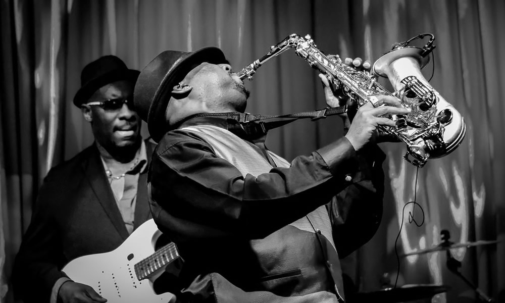

Music is generally defined as the art of arranging sound to create some combination of form, harmony, melody, rhythm or otherwise expressive content. Exact definitions of music vary considerably around the world, though it is an aspect of all human societies, a cultural universal. While scholars agree that music is defined by a few specific elements, there is no consensus on their precise definitions. The creation of music is commonly divided into musical composition, musical improvisation and musical performance, though the topic itself extends into academic disciplines, criticism, philosophy and psychology. Music may be expressed using a vast range of instruments, including the human voice.
In some musical contexts, a performance or composition may be to some extent improvised. For instance, in Hindustani classical music, the performer plays spontaneously while following a partially defined structure and using characteristic motifs. In modal jazz the performers may take turns leading and responding, while sharing a changing set of notes. In a free jazz context, there may be no structure whatsoever, with each performer acting at their discretion. Music may be deliberately composed to be unperformable, or agglomerated electronically from many performances. Music is played in public and private areas, highlighted at events such as festivals, rock concerts, and orchestra performance, and heard incidentally as part of a score or soundtrack to a film, TV show, opera, or video game. Musical playback is the primary function of an MP3 player or CD player and a universal feature of radios and smartphones.
The most listened music genres are as follows:
Jazz music is a music genre that originated in the African-American communities of New Orleans, Louisiana in the late 19th and early 20th centuries, with its roots in blues and ragtime. Since the 1920s Jazz Age, it has been recognized as a major form of musical expression in traditional and popular music. Jazz is characterized by swing and blue notes, complex chords, call and response vocals, polyrhythms and improvisation. Jazz has roots in European harmony and African rhythmic rituals.
As jazz spread around the world, it drew on national, regional, and local musical cultures, which gave rise to different styles. New Orleans jazz began in the early 1910s, combining earlier brass-band marches, French quadrilles, biguine, ragtime and blues with collective polyphonic improvisation. But jazz didn't begin as a single musical tradition in New Orleans or elsewhere. In the 1930s, arranged dance-oriented swing big bands, Kansas City jazz (a hard-swinging, bluesy, improvisational style), and gypsy jazz (a style that emphasized musette waltzes) were the prominent styles. Bebop emerged in the 1940s, shifting jazz from danceable popular music toward a more challenging "musician's music" which was played at faster tempos and used more chord-based improvisation. Cool jazz developed near the end of the 1940s, introducing calmer, smoother sounds and long, linear melodic lines.
Click for detailed information about jazz music.
Hip hop music is a genre of popular music developed in the United States by inner-city African Americans, Caribbean Americans and Latino Americans in the Bronx borough of New York City in the 1970s. It consists of stylized rhythmic music (usually built around drum beats) that commonly accompanies rapping, a rhythmic and rhyming speech that is chanted. It developed as part of hip hop culture, a subculture defined by four key stylistic elements: MCing/rapping, DJing/scratching with turntables, break dancing, and graffiti writing. Other elements include sampling beats or bass lines from records (or synthesized beats and sounds), and rhythmic beatboxing. While often used to refer solely to rapping, "hip hop" more properly denotes the practice of the entire subculture. The term hip hop music is sometimes used synonymously with the term rap music, though rapping is not a required component of hip hop music; the genre may also incorporate other elements of hip hop culture, including DJing, turntablism, scratching, beatboxing, and instrumental tracks.
Click for detailed information about hip hop music.

Pop music is a genre of popular music that originated in its modern form during the mid-1950s in the United States and the United Kingdom. The terms popular music and pop music are often used interchangeably, although the former describes all music that is popular and includes many disparate styles. During the 1950s and 1960s, pop music encompassed rock and roll and the youth-oriented styles it influenced. Rock and pop music remained roughly synonymous until the late 1960s, after which pop became associated with music that was more commercial, ephemeral, and accessible.
Click for detailed information about pop music
Rock music is a broad genre of popular music that originated as "rock and roll" in the United States in the late 1940s and early 1950s, developing into a range of different styles in the mid-1960s and later, particularly in the United States and the United Kingdom. It has its roots in 1940s and 1950s rock and roll, a style that drew directly from the blues and rhythm and blues genres of African-American music and from country music. Rock music also drew strongly from a number of other genres such as electric blues and folk, and incorporated influences from jazz, classical, and other musical styles. For instrumentation, rock has centered on the electric guitar, usually as part of a rock group with electric bass, drums, and one or more singers. Like pop music, lyrics often stress romantic love but also address a wide variety of other themes that are frequently social or political.
Click for detailed information about rock music